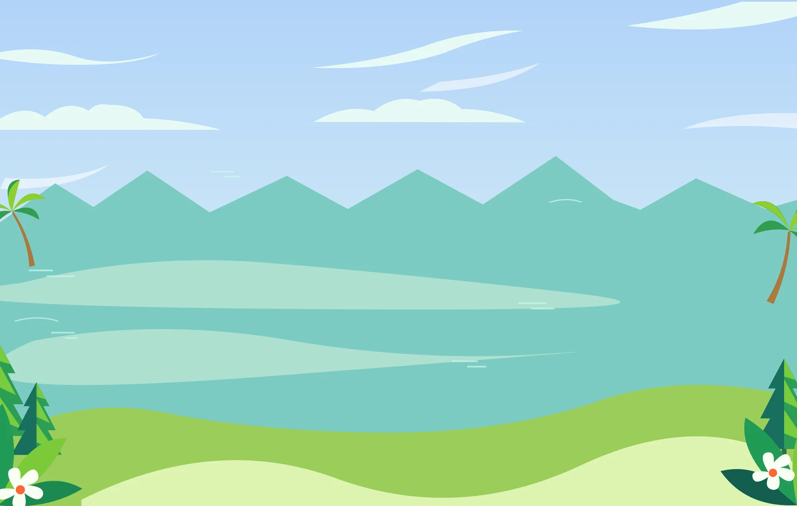
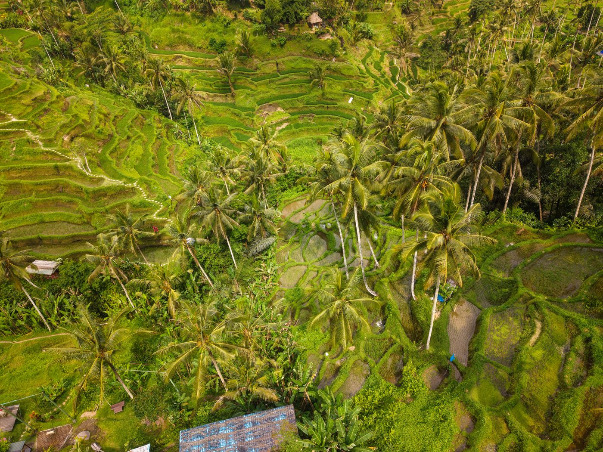
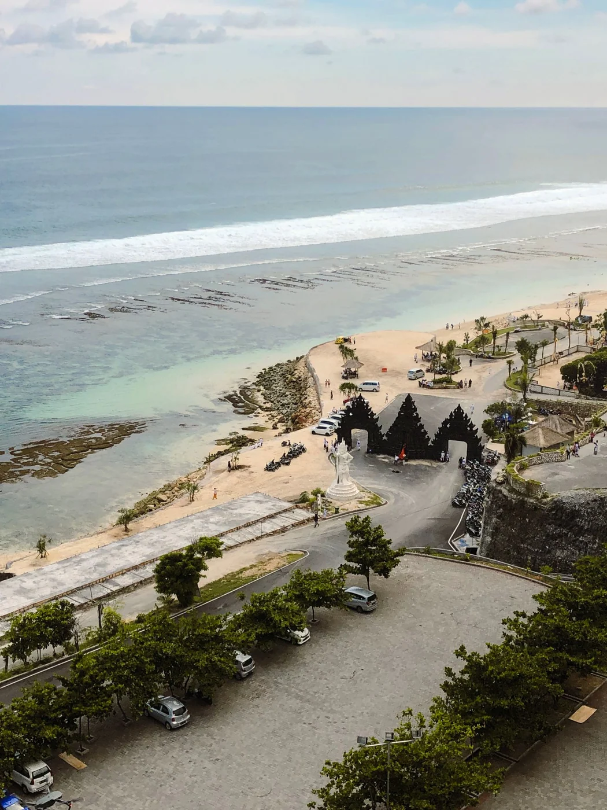
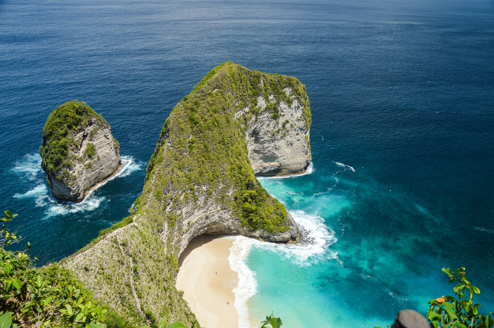
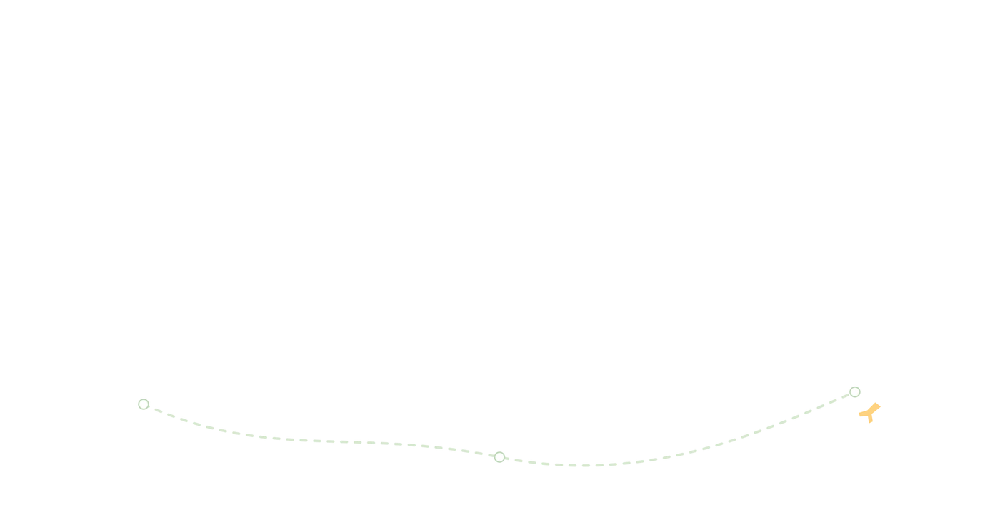

Tegallalang
Gianyar · Alam

Pilih tempatnya, mulai petualanganmu.


 Pura Ulun Danu
Pura Ulun Danu

Tegallalang
Pantai Melasti
Nusa PenidaCoba kata lain atau hapus filter.
Gianyar · Alam
Badung · Pantai
Tabanan · Budaya
Klungkung · Petualangan

Dari debur ombak sampai hijaunya sawah, selalu ada sudut alam untuk kamu nikmati.
Jelajahi alam Bali

Mulai dari rencana ini, lalu ubah tempat dan waktunya sesuai caramu menikmati Bali.

Jelajahi Tegallalang dan nikmati suasana desa di sekitarnya.
Hari 2
Luangkan waktu di Ulun Danu dan bentang alam Bedugul.
Hari 3
Tutup perjalanan dengan suasana pegunungan dan danau.
Dari keseharian warga sampai pengalaman para penjelajah. Kenali Bali melalui cerita mereka.


Seni dan cerita yang terus hidup.
Menemukan pengalaman di seberang pulau.